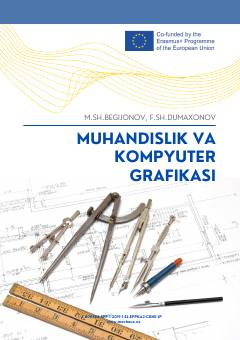

MVMuhandislik va kompyuter grafikasi fanidan AutoCAD dasturi asosida tayyorlangan o‘quv qo‘llanma.
Ushbu o‘quv qo‘llanma muhandislik va kompyuter grafikasi fanining asosiy qoidalari, loyihalash usullari va AutoCAD dasturidan foydalanish asoslarini yoritadi. Kitob texnik chizmalarni kompyuterda bajarish, konstruktorlik hujjatlarini tuzish va vizual modellashtirish ko‘nikmalarini shakllantirishga qaratilgan.